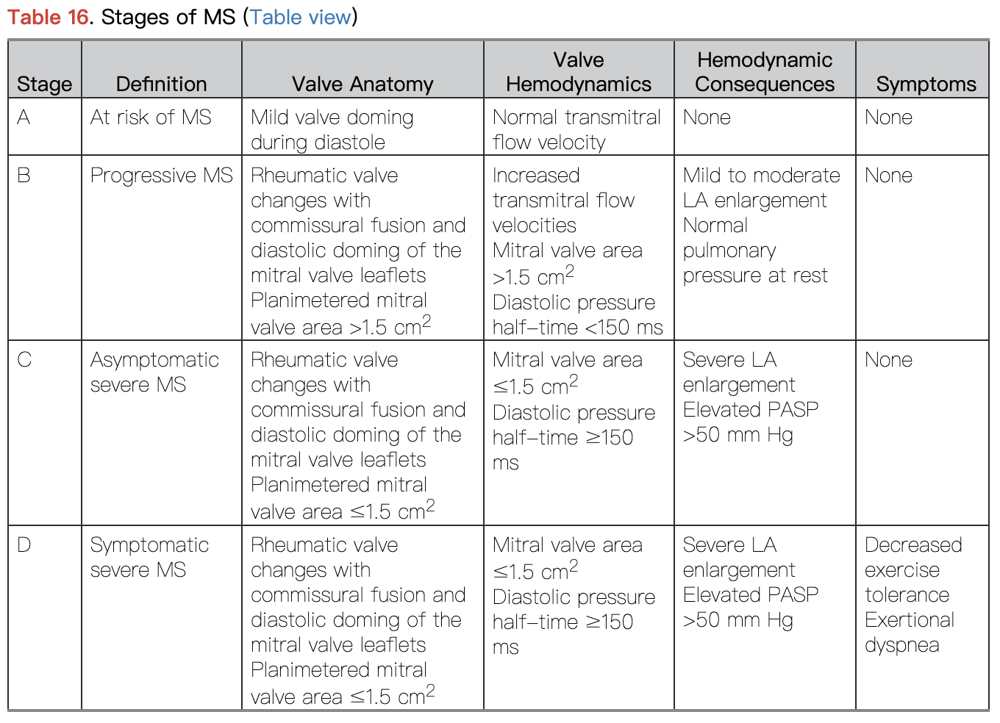

- 定義
- 二尖瓣狹窄（Mitral stenosis, MS） 是指二尖瓣的結構異常，導致瓣口的橫截面積減少，阻礙左心房向左心室的血流
- 流行病學
- 隨著人口老化，在已發展國家，鈣化型MS的盛行率有所上升
- 風濕性二尖瓣狹窄
- 在已發展國家越來越少見，但在低發展國家仍然是重要的公共衛生議題
- 已發展國家盛行年齡：30 至 50 歲
- 分類
- 根據病因
- 根據嚴重程度（2020 ACC/AHA guidelines）
|
階段
|
定義
|
二尖瓣大小 (cm²)
|
臨床症狀
|
相關發現
|
|
A
|
有 MS 風險
|
正常
|
無
|
無
|
|
B
|
漸進性 MS
|
>1.5
|
無
|
RA 輕至中度擴大
PASP正常
|
|
C
|
無症狀之重度 MS
|
≤ 1.5
|
無
|
RA 嚴重擴大
PASP >50 mmHg
|
|
D
|
有症狀之重度 MS
|
≤ 1.5
|
運動耐受性下降、活動時呼吸困難
|
RA 嚴重擴大
PASP >50 mmHg
|
*PASP = 肺動脈收縮壓 Pulmonary artery
systolic pressure

（圖說：ACC/AHA二尖辦狹窄分類）
（Reference：Table 16. Stages of MS, Otto CM,
Nishimura RA, Bonow RO, Carabello BA, Erwin JP 3rd, Gentile F, Jneid H,
Krieger EV, Mack M, McLeod C, O'Gara PT, Rigolin VH, Sundt TM 3rd, Thompson A,
Toly C. 2020 ACC/AHA Guideline for the Management of Patients With Valvular
Heart Disease: Executive Summary: A Report of the American College of
Cardiology/American Heart Association Joint Committee on Clinical Practice
Guidelines. Circulation. 2021 Feb 2;143(5):e35-e71. doi:
10.1161/CIR.0000000000000932.）
- ASE/EACVI 2017 Valvular Regurgitation Recommendations
|
分級
|
嚴重程度
|
說明
|
|
0/4
|
無逆流
|
沒有發現二尖瓣逆流
|
|
1/4
|
極輕微（mild）
|
少量逆流，通常無症狀
|
|
2/4
|
中等（moderate）
|
有明顯逆流，但未必有症狀
|
|
3/4
|
中重度（moderate-to-severe）
|
逆流量大，可能造成心室負荷
|
|
4/4
|
重度（severe）
|
嚴重逆流，通常需考慮手術或介入治療
|
- 病因
- 風濕性二尖瓣狹窄（Rheumatic mitral stenosis）：最常見
- 約 50-70% 的 MS 患者有風濕性心臟病（Rheumatic
Heart Disease, RHD）的病史
- 風濕性 MS 屬於慢性疾病，在首次急性風濕性心肌炎發作時不會出現，為持續進展、終身性疾病
- 女性RHD的比例高於男性
- 自體免疫疾病：全身性紅斑狼瘡（SLE）、類風濕性關節炎（RA）
- 先天性：先天性二尖瓣狹窄
- 醫源性：放射線相關的瓣膜疾病（Radiation-associated
valve disease）
- 放射線治療後的一種罕見併發症
- Hodgkin lymphoma 患者接受放射線治療後常見的晚期併發症
- 病變可能在接受放射治療後的 10 到 20 年才出現
- 其他罕見病因
- Fabry disease
- Whipple disease
- 黏多醣儲積症（mucopolysaccharidosis）
- ethysergide therapy
- 類癌性心瓣膜病（carcinoid valve disease）
- 心內膜心肌纖維化（endomyocardial fibrosis）
- 有些疾病可能產生與原發性二尖瓣狹窄相似的血流動力學異常（mimic）
- 心房黏液瘤（atrial myxoma）：左心房黏液瘤造成出口阻塞
- 大型感染性贅生物（large infected vegetations）：細菌性心內膜炎，大型贅生物造成瓣口阻塞
- 球狀瓣膜血栓（ball
valve thrombus）
- 退化性狹窄的生物瓣膜（degenerated stenotic
bioprosthetic mitral valve）
- 病生理
- 正常的二尖瓣面積為 4.0 至 5.0 cm²，當瓣膜面積減少時，心房壓力增加才能使血液從左心房流向左心室
- 前向衰竭（Forward heart failure）
- 二尖瓣狹窄
→ 阻礙血液流入左心室（LV）
→ 左心室舒張末期容量減少（↓ LV
end-diastolic volume）
→ 心搏量減少（↓ stroke
volume）、心輸出下降（↓ cardiac
output）
→ 造成前向心衰竭（forward heart failure）
- 後向衰竭（Backward heart failure）
- 二尖瓣狹窄
→ 左心房壓力上升
→ 血液回流至肺部，導致肺部微血管壓上升
→ 心源性肺水腫（cardiogenic pulmonary edema）
→ 肺靜脈順應性下降，加重肺動脈高壓
→ 右心室肥厚（RV hypertrophy）
- 肺靜脈高壓
- 左心房壓力升高會傳至肺靜脈系統，當血管內的靜水壓超過血漿膠體滲透壓時，會導致肺水腫，而後續肺靜脈順應性下降會加劇肺靜脈高壓
- 肺動脈高壓
- 因應肺靜脈壓力增加，肺小動脈會重塑以減輕肺水腫的狀況，包括內膜增生使血管腔狹窄、內皮細胞與平滑肌細胞增生且活性上升，細胞凋亡的能力減弱、血管中膜及外膜肥厚及纖維化
- 但反應性肺動脈高壓造成的次發性血流阻力增加，也會同時加劇心輸出量下降，使心臟功能更加惡化
- 反應性肺動脈高壓與內皮素（endothelin-1, ET-1）相關
- 研究顯示，重度 MS 患者的 ET-1 濃度為健康對照者的三倍
- 在一項針對重度 MS 病人接受手術的研究中，術前的 ET-1 基礎濃度是預測術後 6 個月肺毛細血管楔壓下降的獨立因子
- 左心房重塑（Left atrial remodeling）
- 長期的壓力負荷會導致左心房出現適應性變化
- 心肌肥厚（myocardial hypertrophy）
- 間質纖維化（interstitial fibrosis）
- 幾何結構的重塑（geometric remodeling）
- 臨床特徵
- 通常會在多年內逐漸從無症狀進展為嚴重心衰竭症狀
- 在部分情況會出現急性症狀，如心律不整、心房顫動、心輸出量需求上升（如懷孕、敗血症、劇烈運動）等
- 典型症狀
- 呼吸困難（Dyspnea）、疲倦（Fatigue）
- 聲音沙啞（Hoarseness）：Ortner’s
syndrome，因左心房擴大壓迫喉返神經
- 吞嚥困難（Dysphagia）：因左心房擴大壓迫食道
- 咳嗽：因左心房擴大壓迫支氣管
- 心悸（Palpitations）
- 栓塞症狀：中風、腸繫膜缺血
- 後期表現
- 右心衰竭：下肢水腫、頸靜脈怒張、腹水
- 陣發性夜間呼吸困難（Paroxysmal nocturnal dyspnea, PND）
- 端坐呼吸（Orthopnea）
- 咳血（Hemoptysis）：肺靜脈高壓導致「支氣管－肺部側枝循環」的形成（broncho-pulmonary
anastomoses）
- 診斷
- 理學檢查
- 二尖瓣面容（Mitral facies）
- 常見於嚴重慢性 MS，因低心輸出量與慢性低氧，患者呈現兩頰潮紅、周邊蒼白或發紺
- 心律不整：因心房顫動（Atrial
fibrillation）所致
- 右心衰竭的臨床表現：
- 如果因栓塞引起中風或周邊動脈栓塞，可能會有局部神經學缺損、四肢冰冷發紺的情況
- 心音
- 舒張期雜音（Diastolic
murmur）
- 第一心音（S1）亢進
- Opening snap
- S2 至 Opening snap 間隔時間越短，代表疾病越嚴重
- 因左心房壓力高於左心室舒張末壓（LVEDP），瓣膜會更早打開
- Laboratory
Test
- BNP 或 NT-proBNP：與疾病嚴重度成正比
- CBC：如有感染性心內膜炎，白血球會上升
- 基礎代謝檢查（Basic Metabolic
Pane, BMP）：可反映腎功能是否惡化
- 肝功能檢查（LFTs）：可能因鬱血性肝病（congestive hepatopathy）升高
- CRP：風濕性心臟病活動期會有持續發炎反應，導致升高
- 經胸心臟超音波（TTE）：確診
- 所有懷疑 MS 的病人皆應進行經胸心臟超音波（TTE）檢查
- 初步評估瓣膜構造與狹窄程度的最佳及最重要的工具
- 典型特徵
- 瓣葉增厚、鈣化，伴隨交界融合（commissural fusion）
- 舒張期平均壓力梯度上升（Increased mean diastolic pressure
gradient across the mitral valve）
- 次發性變化：右心室擴大、左心房擴大、肺動脈高壓特徵
- 可利用 TTE 所測得的數值及特徵用來分級病患MS的嚴重度
- 胸部 X 光：
- 左心房擴大：
- 支氣管抬高、角度＞90°（支氣管「展開」）
- 心臟左緣直化或凸起
- 「雙重心影」（Double density sign）
- 肺鬱血
- 右心室擴大
- 額外檢查
- 經食道心臟超音波（TEE）
- TTE 呈現的品質不佳時可考慮使用
- 用於介入治療前評估，如心腔內是否有血栓、是否合併二尖瓣逆流
- 運動壓力測試（Stress Test）
- 用於臨床症狀與影像結果不一致時
- 病人無症狀但 TTE 顯示重度 MS
- 病人有症狀但 TTE 顯示輕/中度 MS
- 心導管檢查（Cardiac
catheterization）
- 可檢查肺高壓的嚴重度
- 於手術前排除及治療冠狀動脈疾病
- 處置
- 保守治療
- 控制共病：糖尿病、高血脂、高血壓
- 心律不整藥物：特別是年輕病人運動時出現心搏過速
- 降低心率有助於延長舒張期、改善心輸出量，但須留意低血壓
- 抗凝血治療
- 適應症：心房顫動、有栓塞病史、出現心腔血栓、使用機械性瓣膜、生物瓣膜置換後 3–6 個月內
- vitamin K antagonist (VKA)
- 目標 INR：2.5
- 心臟衰竭治療
- 感染性心內膜炎預防
- 高風險病人（如曾患 IE）接受牙科手術時需抗生素預防
- 口服抗鏈球菌藥物
- 手術
|
症狀
|
適應症
|
|
無
|
MVA ≤ 1.5 cm² 合併
- PASP > 50 mmHg，或
- 新發現的心房顫動
|
|
有
|
MVA ≤ 1.5 cm²，或
MVA > 1.5 cm²
但經 stress test 證實有具血流動力學意義的 MS
- 跨二尖瓣的平均壓力差 > 10 mmHg
- 收縮期肺動脈壓（sPAP）> 25 mmHg
|
- 經皮球囊瓣膜擴張術（PMBC）：首選
- 使用導管與氣球擴張狹窄的瓣口
- 使用 Wilkins score 評估是否適合使用PMBC
|
項目
|
評分範圍
|
評估內容
|
|
瓣膜增厚（Leaflet thickening）
|
0–4
|
越厚分數越高
|
|
瓣膜活動度（Leaflet mobility）
|
0–4
|
受限程度越高，分數越高
|
|
瓣膜鈣化程度（Leaflet calcification）
|
0–4
|
鈣化越明顯，分數越高
|
|
瓣下結構變化（Subvalvular apparatus）
|
0–4
|
腱索纖維化、融合愈多分數愈高
|
|
總分
|
MS狀況
|
PMBC 適應性
|
|
0–8 分
|
解剖結構良好
|
預後佳，適合進行 PMBC
|
|
> 8 分
|
結構異常明顯
|
成功率降低，需謹慎考慮，或改為Open repair
|
- PMBC 成功定義/治療目標
- 擴張後二尖瓣面積 > 1.5 cm²
- 術後根據 ASE/EACVI guidelines 分級 ≦ 2/4
- 預後
- 手術死亡率：0.5%
- 初次成功率：>80% 的病人可達成治療目標
- 併發症（如血管損傷、栓塞、重度
MR）發生率：<10%
- >50% 病人20年內無需再次手術或置換瓣膜
- 經導管二尖瓣修復與置換（Transcatheter MV
Repair/Replacement）
- 適用於手術風險高者
- 再手術率高：一年內20%需再次手術
- Open repair
- 適應症
- 解剖結構、Wilkins score >8分：不適合使用 PMBC
- 左心房已有血栓產生
- 合併其他瓣膜疾病：嚴重 MR、三尖瓣病變
- 曾換過生物瓣膜，但已失效需進行瓣膜置換
- 術式
- 開放式交界切開術（commissurotomy）
- 透過開心手術將融合的交界（commissures）以小刀逐步切開，同時保護腱索。若葉片或腱索鈣化嚴重，可進行去鈣、分離處理
- 需使用體外循環（心肺機）
- 預後
- 二尖瓣置換術
- 最常見的外科治療方式
- 強調保留瓣下結構（如腱索與乳頭肌）以維持左心室功能
- 可使用機械或生物瓣膜（「人造瓣膜的選擇」章節中詳述），術後需使用抗凝血劑
- 預後
- 二尖瓣修復術（Mitral Valve Repair）
- 根據病變型態進行特定處理，包括：三角切除（triangular resection）、腱索移植或使用人工腱索、環形成形術（annuloplasty）
- 修復術通常優於置換，併發症與再手術率較低
- 併發症
- 心房顫動（atrial fibrillation）
- 血栓形成、中風、週邊動脈栓塞
- 鬱血性心臟衰竭
- 肺水腫、肺動脈高壓
- 食道壓迫、喉返神經麻痹
- 感染性心內膜炎
- 預後
- 無症狀患者的 10 年生存率：>80%
- 有症狀重度 MS 患者、沒有接受介入治療的10 年生存率：<15%
- 合併嚴重肺動脈高壓，平均存活率不足三年
- MS患者死因
- 右心衰竭和/或肺水腫：>60%（主因）
- 全身性血栓栓塞事件：腦部中風（40%）、肺栓塞
- 感染性併發症（如心內膜炎）：5-8%
- Reference
- Sabiston
Textbook of Surgery 21st Edition
- Schwartz's
Principles of Surgery 11th Edition
- Mitral valve stenosis,
AMBOSS
- Pathophysiology
and natural history of mitral stenosis, UpToDate
- 2020 ACC/AHA
Guideline for the Management of Patients With Valvular Heart Disease:
Executive Summary: A Report of the American College of
Cardiology/American Heart Association Joint Committee on Clinical
Practice Guidelines. Circulation. 2021 Feb 2;143(5):e35-e71. doi:
10.1161/CIR.0000000000000932